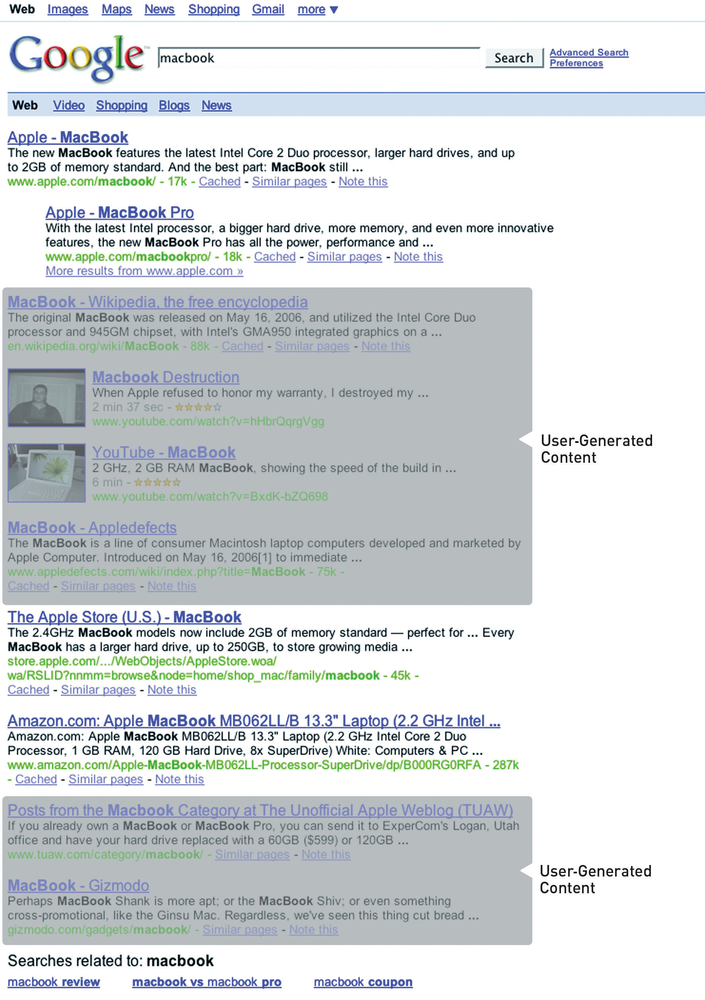

If Dell were really smart, they’d hire me (yes, me) to come to them and teach them about blogs, about how their customers now have a voice; about how their customers are a community—a community often in revolt; about how they could find out what their customers really think; about how they could fix their customers’ problems before they become revolts; about how they could become a better company with the help of their customers.
If they’d only listen.
Jeff Jarvis on his blog, Buzzmachine.com, in 2005
Online conversationsA bidirectional discussion between either individuals or a brand and its stakeholders in an online environment such as social media. are taking place all the time: about politics, about Britney Spears, about a pet dog, about nearly anything. People everywhere are engaging in and creating blogs, videos, mashups, and more. It’s called consumer-generated media (CGM)Another term for social media—the media that are published, created, and shared by individuals on the Internet, such as blogs, images, and video., and it’s big news for any company or personality today.
We’ve learned about the tools of social media and the importance of word of mouth when it comes to viral marketing. Consumers trust each other, and search engines find that trust very relevant. Increasingly, CGM is showing up in the top results of the search engine results pages (SERPs)What is seen on a search engine when a search is performed..
The use of social media has equipped consumers with a voice, a platform, and the ability to amplify their views. The connected nature of the Internet makes these views easy to share, and the accessibility of social media tools makes it easy for other consumers to respond. Whether positive, negative, or just slightly off center, consumers are making their views known and brands are taking heed.
Added to this is the rising prevalence of CGM in search results, particularly with the recent integration of Twitter into search results and Google’s Social Search. Entries that companies have no control over are ranking highly in brand search results. A Google search on “brand name + complaints” will display a whole lot more CGM.
A company’s reputation can make a difference to its bottom line. Companies that listen to and engage with their customers and appear honest and transparent can benefit from a growing fan base of loyal customers who can then turn into passionate spokespeople. Companies who ignore the voices of their customers will see diminishing loyalty and a growing resentment among the vocal online consumers. So much so that the recent King III report on corporate governance requires that stakeholder reputation is managed in order for compliance.“King III Report,” PricewaterhouseCoopers, 2009, http://www.pwc.com/za/en/king3/index.jhtml (accessed June 23, 2010).
Research by Edelman in 2008 found that 54 percent of individuals trusted fellow consumers ahead of any other source; similarly, Nielsen’s “Trust in Advertising” found that 78 percent of people trust the recommendations of others.“Edelman Trust Barometer 2008,” Edelman, 2008, http://www.edelman.com/TRUST/2008/TrustBarometer08_FINAL.pdf (accessed June 22, 2010); “Trust in Advertising: A Global Nielsen Consumer Report,” Nielsen, October 2007, http://asiapacific.acnielsen.com/site/documents/TrustinAdvertisingOct07.pdf (accessed June 22, 2010). Companies and individuals need to listen to what is being said about them and learn how to respond to and engage with their consumers in this world of shifting power.
Figure 11.1
A search for “Macbook” shows that there are many entries on the SERP (search engine results page) that Apple does not control.